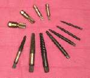
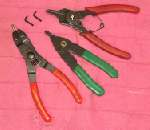
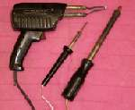
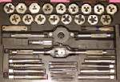
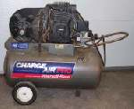
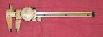
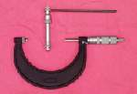
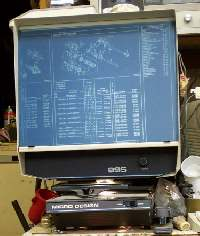
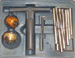
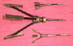

ADVANCED TOOLS

¶ After you have been wrenching a short while you will find that you need more than just regular hand tools to get the job done. You need some special tools. Tools made for one job and only one job. Some of these special tools will only do one job on one type of engine, like a flywheel puller. Others do one type of job common to a lot of different engines, such as a micrometer to measure the size of an engines bore. The one thing all these tools have in common, is that they make that one job fast and easy. I'm only going to cover the special tools that are common to a lot of engines. The other "one job, one engine" types of tool you will just have to get as the need arises. The ones we will cover here will be the ones you will really need to help you get the job done, and done right. I will cover them in order of their importance, but if you are bucks short, buy the cheap ones first.
 Torque Wrench. A cheap "must have". The 3/8" drive ones are in the $20-$30 dollar range. 1/2" $40-$50. Get one of each drive, 3/8" and 1/2". Sears has ones that work just fine. A needful tool.
Torque Wrench. A cheap "must have". The 3/8" drive ones are in the $20-$30 dollar range. 1/2" $40-$50. Get one of each drive, 3/8" and 1/2". Sears has ones that work just fine. A needful tool.

Easy Outs. Use Easy Outs to remove broken bolts. Drill the right sized hole in the center of the broken bolt, tap the easy out in gently with a hammer and unscrew the bolt. Sounds so easy, doesn't it ? Just don't break off the easy out if the bolt won't turn. They are very hard and you will never be able to drill it out.

Circlip Pliers. You have to have these to get your front forks apart, pull some clutch baskets, disassemble gear clusters, all kinds of things. They come in inner and outer types, and there are several different nose sizes and shapes. Sometimes, I think it's best to buy them as you need them or you can just get a set.

Soldering Gun. A Soldering Gun or Iron. If you are going to fix wiring or make control cables, you have to have one. They come in lots of different sizes. Bigger the wire, the bigger the gun needed. If you only have one, a 200 watt model will do just about anything on a motorcycle.

Tap and Die Set. Taps to cut threads in holes and dies to cut threads on shafts. Taps and dies are handy, not only to cut new threads, but to clean up old ones too. There are lots of different sizes. Get as big of set, both standard and metric, as you can afford. Very handy.

An Air Compressor. You need an air compressor. Not only is it handy for airing up tires and blowing dust off things, but it opens up to you the world of air tools. Like air guns, air ratchets, air chisels, etc. Air tools have lots more power than electric tools. This is a must have. You can pick up a good, new, air compressor for as little as $200.00. Look around in garage sales and they cost even less. Get one with as big of tank as you can, to reduce engine cycle time. You can pipe air all over you shop. Use 3/4" CPVC pipe. It's cheap, so you can put an air fitting right next to your work. Air hose is cheap, but tends to rot it you leave it out in the sun. CPVC pipe will last forever, it's cheap. Pipe it everywhere.
Air Tools. If you are just starting out, buy one of the cheap kits that has everything in it. If it looks like you are really going to use one particular gun a lot, then you can buy an expensive brand name. I like the "Chicago Pneumatic." Brand.

Dial Calipers. With Dial Calipers you can measure shaft diameters, lengths, widths, depths. Truth be known, with a little care, you can measure piston skirt diameters and maybe even cylinder bore diameters... well, on top and bottom anyway. These can be had for $10.00 and up. Harbor Freight sells a good, cheap set.

A Set of Micrometers. You can get Micrometers in sets of individual tools, 0-1", 1"-2", 2"-3", etc. or in a universal set that has one large micrometer and several adapters. You will need both inside and outside micrometers. These can get quite pricey. $100-00 and up. The universal sets are cheaper. I have the universal set 'cuse I'm poor (and cheap!). If you are going to measure cylinders bores and piston skirts, and you want to do it right, you MUST have the a micrometer.

Micro-Fiche Reader and Micro Fiche. Once you start using micro-fiche you will wonder how you ever got along without one. These 5 by 7 inch sheets of film will show you where every part goes and give you the part number. Very handy when a basket case comes in. You can get ALL the Yamaha shop manuals on micro-fiche. Sweet. A Micro-Fiche reader can cost $300.00 to $700.00 new, so go to a used office furniture supply place and they will probably have one for $100.00. Fiche decks cost $100.00-$200.00 and are worth every penny. You can also get individual fiche too. I bought my first micro-fiche reader from a used office supply place for $100.00. Used it for 15 years and then got a better one in a garage sale for $25.00!UPDATE. When I wrote about Micro-Fiche readers and Micro-Fiche back in 2003 they were extremely useful. Now they are all gone. Banished to the Days of Yore. Today you use a computer and go on the Internet. You can get exploded parts views and part numbers, for almost any motorcycle, from dozens of different Web Sites. Your Computer is now an essential motorcycle repair tool.

Valve Seat Cutters. You can get valve seat cutters in lots of different sizes and angles. Expensive, they can be $100.00 or more each. If you don't have a lot of valves seats to do, it may be cheaper to farm it out to someone who has a set.

Cylinder Hone. There are lots of different types of cylinder hones from cheap spring hones to break the glaze, to expensive hones from Sunnen and Ammco which will accurately hone a cylinder oversize.
Other Tools. A parts washer and sandblaster cabinet are nice to have, but are really not a necessity. From here on, the list is endless, just try not to get carried away. Before you get any tool, ask yourself this. Will this tool SAVE me time ? Will this tool SAVE me money? Will this tool EARN me money? If the answer is no or I'm not sure, then maybe it would be better to not get it. I just LOVE special tools, but anymore, I don't get new and fancy tools without a lot of proof that they will make me money or save me time. I have thousands in tools that promised much but delivered little. I sure wish I could have all that money back. Don't you make the same mistake.
Another thing to remember. Only get the quality you need. If your an easy one to please, "You only want the best," you'd better have a lot of money. I find most manufacturers have a top of the line tool, with all the bells and whistles, to separate the fools who "only want the best" from their money and then a meat and potatoes model, for those who need quality at a reasonable price. Buy only the quality you need.
Did this page help you? Would you like to help us? If so Click HERE
Copyright © 1999-2003 dansmc.com. All rights reserved.
 Torque Wrench. A cheap "must have". The 3/8" drive ones are in the $20-$30 dollar range. 1/2" $40-$50. Get one of each drive, 3/8" and 1/2". Sears has ones that work just fine. A needful tool.
Torque Wrench. A cheap "must have". The 3/8" drive ones are in the $20-$30 dollar range. 1/2" $40-$50. Get one of each drive, 3/8" and 1/2". Sears has ones that work just fine. A needful tool.